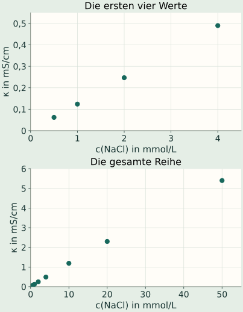

Das Material: Konzentrationsreihe bei 25 °C
Alle Werte gehören zu wässrigen NaCl-Lösungen bei 25 °C. Die Tabelle enthält eigens entwickelte didaktische Messwerte; sie ist keine veröffentlichte reale Messreihe. Der geringe Eigenbeitrag des Wassers wird im Aufgabenmodell vernachlässigt.
| c(NaCl) in mmol/L | κ in mS/cm |
|---|---|
| 0,50 | 0,062 |
| 1,0 | 0,124 |
| 2,0 | 0,247 |
| 4,0 | 0,490 |
| 10 | 1,19 |
| 20 | 2,30 |
| 50 | 5,40 |
Die ersten vier Werte bilden den verdünnten Bereich der Aufgabe. Vergleiche ihn mit den drei Werten bei höheren Konzentrationen.
Die Daten als Diagramme ansehen

A · Eine Regel aus Daten gewinnen
- Beschreibe den Zusammenhang zwischen c und κ für die ersten vier Werte.
- Prüfe mit mindestens zwei Zahlenvergleichen, ob in diesem Bereich näherungsweise κ ∝ c gilt.
- Schätze die Leitfähigkeit einer 3,0-mmol/L-Lösung. Begründe, warum die Schätzung im betrachteten Bereich sinnvoll ist.
A · Hilfe 1: Proportionalität erkennen
Bei einem proportionalen Zusammenhang bleibt κ/c konstant. Alternativ kannst du prüfen, ob bei einer Verdopplung von c auch κ annähernd verdoppelt wird.
A · Hilfe 2: Zwischen zwei Werten schätzen
3,0 mmol/L liegt genau zwischen 2,0 und 4,0 mmol/L. Nutze die entsprechenden Leitfähigkeiten und die näherungsweise gerade Entwicklung dazwischen.
A · Musterlösung
Mit steigender NaCl-Konzentration nimmt κ zu. Im Bereich von 0,50 bis 4,0 mmol/L ist der Zusammenhang näherungsweise proportional.
Beispiel: Von 0,50 auf 1,0 mmol/L verdoppelt sich c; κ steigt von 0,062 auf 0,124 mS/cm, also ebenfalls um den Faktor 2. Von 2,0 auf 4,0 mmol/L steigt κ von 0,247 auf 0,490 mS/cm; exakt doppelt wären 0,494 mS/cm.
Die Quotienten κ/c betragen 0,124; 0,124; 0,1235 und 0,1225 (mS/cm)/(mmol/L). Sie sind ähnlich, jedoch nicht exakt gleich.
≈ 0,37 mS/cm
Das ist eine Interpolation zwischen nahen Datenpunkten innerhalb des überprüften Bereichs. Der Wert ist eine Schätzung, keine zusätzliche Messung.
B · Die Gültigkeit der Regel beurteilen
„Die 50-mmol/L-Lösung ist 50-mal so konzentriert wie die 1,0-mmol/L-Lösung. Also muss sie genau 50-mal so gut leiten.“
- Berechne die nach dieser Aussage erwartete Leitfähigkeit und vergleiche sie mit dem Tabellenwert.
- Formuliere eine durch die Daten gestützte Regel einschließlich ihrer Grenze.
- Erkläre, warum man aus der NaCl-Reihe nicht direkt die Konzentration einer unbekannten Salzlösung bestimmen kann.
B · Hilfe 1: Eine Vorhersage prüfen
Rechne 50 · 0,124 mS/cm. Wie groß ist die Differenz zu 5,40 mS/cm? Unterscheide „nimmt zu“ von „ist proportional“.
B · Hilfe 2: Bedingungen benennen
Welche Größen müssen außer der Konzentration gleich bleiben? Denke an Ionensorten, Beweglichkeiten und Temperatur. Welche dieser Bedingungen ist bei einer unbekannten Salzlösung nicht gesichert?
B · Musterlösung
Die proportionale Vorhersage lautet 50 · 0,124 = 6,20 mS/cm. Der Tabellenwert von 5,40 mS/cm liegt um 0,80 mS/cm, also rund 13 % der Vorhersage, darunter. Die Aussage „genau 50-mal“ trifft nicht zu.
Passende Regel: Bei gleicher Temperatur und gleichem Elektrolyten steigt κ in dieser Reihe mit c. Im hier überprüften verdünnten Bereich von 0,50 bis 4,0 mmol/L gilt näherungsweise κ ∝ c. Auf höhere Konzentrationen lässt sich die Proportionalität nicht unverändert übertragen.
Die Reihe gilt für NaCl. Andere Ionen besitzen andere Beweglichkeiten und können andere Ladungen sowie Zahlenverhältnisse haben. Für eine unbekannte Salzlösung ist deshalb keine eindeutige Zuordnung eines einzelnen κ-Werts zu c möglich.
Enthält deine Regel die Bedingungen „gleicher Elektrolyt“, „gleiche Temperatur“ und „begrenzter Konzentrationsbereich“?
Erklärung bei Bedarf
Infoteil öffnen: Warum gilt die Regel nur näherungsweise?
In einer verdünnten NaCl-Lösung sind die Ionenkonzentrationen proportional zur Salzkonzentration. Bleiben die Beweglichkeiten annähernd gleich, bedeuten doppelt so viele Ionen pro Volumen ungefähr den doppelten Leitfähigkeitsbeitrag.
Bei höheren Konzentrationen werden die gegenseitigen Wechselwirkungen der Ionen stärker. Ihre Beweglichkeiten können sich ändern; je nach Lösung können außerdem Ionenassoziation und Änderungen der Zähigkeit eine Rolle spielen. Ein unveränderter Proportionalitätsfaktor ist deshalb nicht allgemein zu erwarten.
Bei schwachen Elektrolyten kommt hinzu, dass sich der Anteil der als Ionen vorliegenden Teilchen mit der Konzentration ändern kann. „Doppelte Stoffkonzentration“ bedeutet dann nicht automatisch „doppelte Ionenkonzentration“.
Die Daten begründen einen Näherungsbereich für diese Aufgabe. Sie liefern keine universelle Konzentrationsgrenze für alle Stoffe. Grundlagen zum Ionenvergleich findest du in 1.2.
Fachliche Quellen und Modellgrenzen
- Avni et al. (2022): Conductivity of Concentrated Electrolytes, Physical Review Letters 128, 098002 – Primärforschung zu Konzentration und Wechselwirkungen.
- Experimental and Modeling of Conductivity for Electrolyte Solution Systems, ACS Omega (2020) – Konzentrations- und Temperatureinflüsse.
- OpenStax: Chemistry 2e, 11.2 Electrolytes – Unterscheidung starker und schwacher Elektrolyte.
Alle Tabellenwerte, Aufgaben und Musterlösungen wurden für diese Lernseite entwickelt. Sie bilden fachlich plausible Trends ab und sind ausdrücklich keine Originalmessdaten. Die genannten Konzentrationsbereiche sind auf die Aufgabe begrenzt.